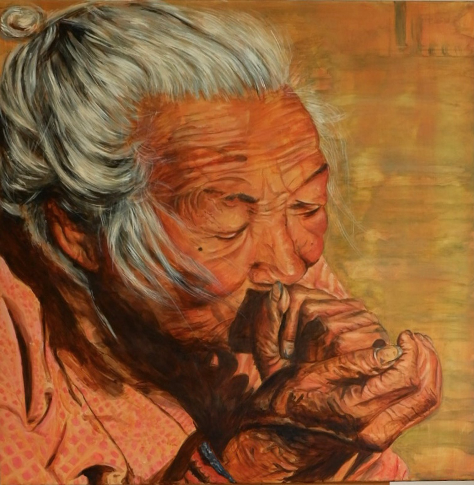
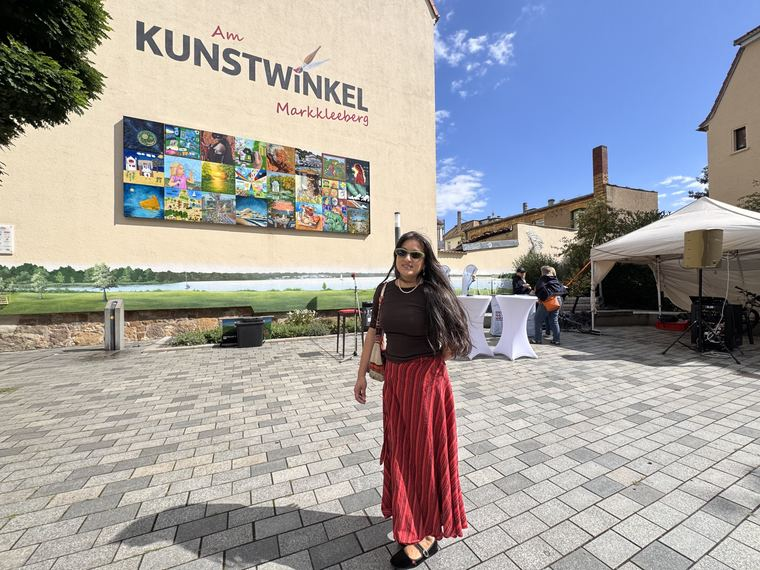
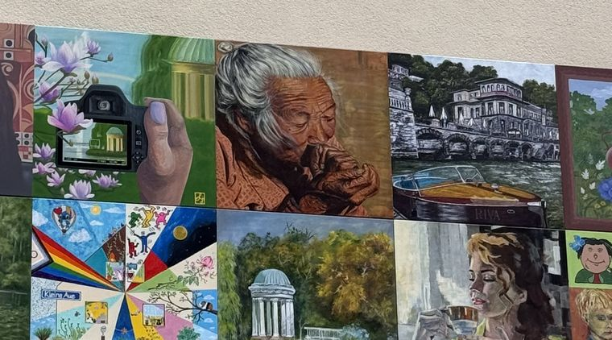
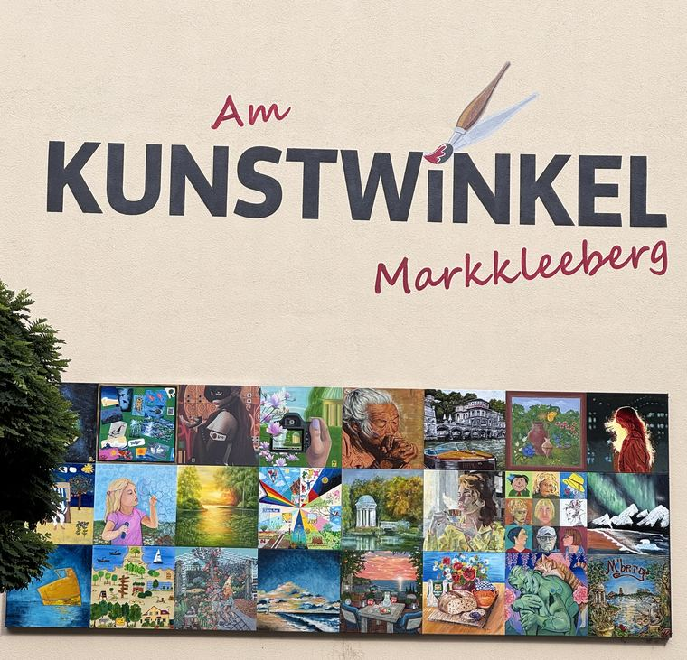
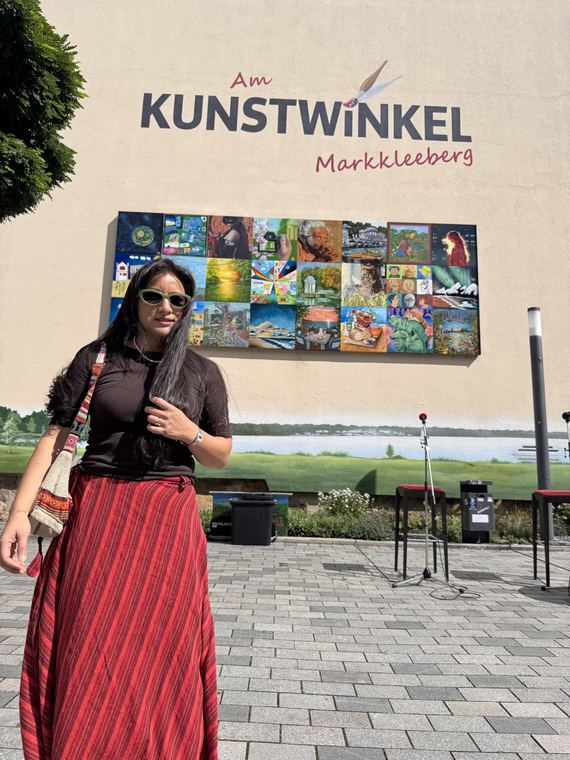
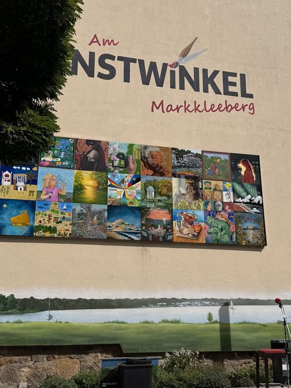
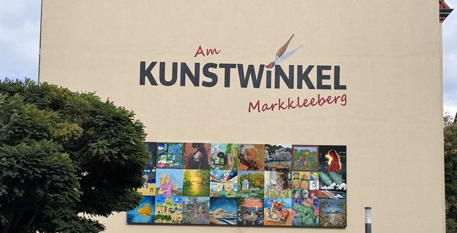
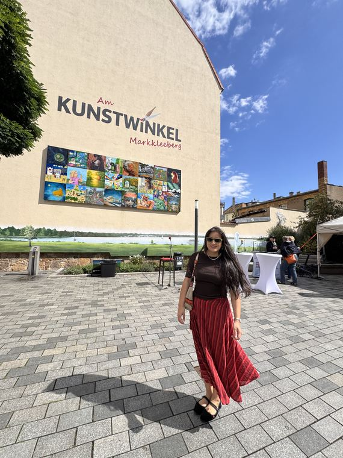

Am Kunstwinkel, Markkleeberg
“The Morning Pipe” was selected as one of 24 works for the 2026/27 open-air gallery on the Kunstwinkel wall, under the motto “Mein Bild für Dich”. It was unveiled at the 8th Kunstwinkelfest on 5 September 2026 and hangs there for a full year.

The Morning Pipe
Acrylic on canvasAn elderly woman draws on her pipe, both hands cupped around it. The whole painting is held within one narrow range of warm ochre and rose — the light doing the work that colour usually does.
See it in the galleryHow this one works
The Kunstwinkel is a permanent open-air gallery on a house wall at Rathausstraße 23 in Markkleeberg. Each year the town selects 24 works from submitted artists, mounts them on the wall for twelve months, and then auctions them at the following year's Kunstwinkelfest — with the proceeds going to the artists and the project.
| Exhibition | Am Kunstwinkel — open-air gallery, 2026/27 collection |
|---|---|
| Motto | „Mein Bild für Dich“ |
| Work shown | The Morning Pipe |
| Unveiled | 5 September 2026, at the 8th Kunstwinkelfest |
| On show until | Kunstwinkelfest 2027 |
| Where | Rathausstraße 23, 04416 Markkleeberg |
| Selected works | 24, by 24 different artists |
| Organiser | Stadt Markkleeberg |
Bidding is not open yet. The 2026/27 collection — the one this painting belongs to — goes to auction at the Kunstwinkelfest in September 2027. The town publishes an online catalogue a few weeks beforehand, run by the auction house IKV Fester, where bids can be placed in advance of the live auction.
This page will carry the direct bidding link as soon as the town publishes it. Until then:
If you'd rather not wait for the auction, Srijana has other originals available directly — see the gallery or write to her.
On the day
A few seconds at the 8th Kunstwinkelfest — the camera lifts from the artist to the wall, where her painting hangs in the top row.
Srijana at Am Kunstwinkel, 5 September 2026.
The unveiling
The 8th Kunstwinkelfest, when the new collection went up on the wall.







